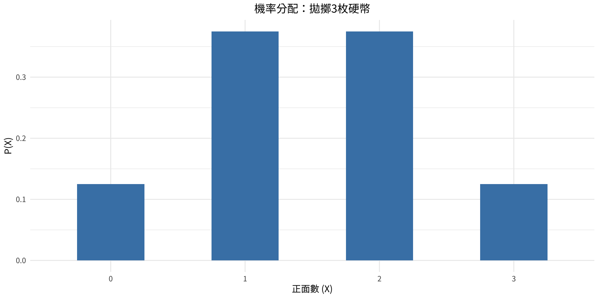
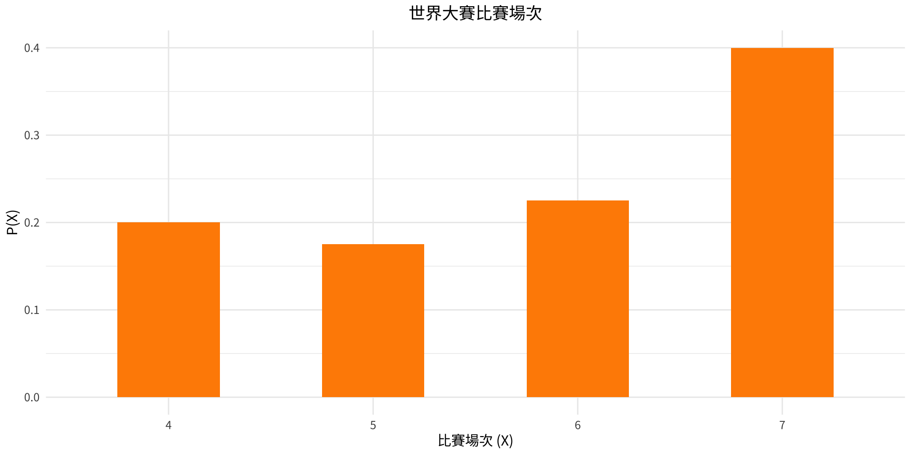
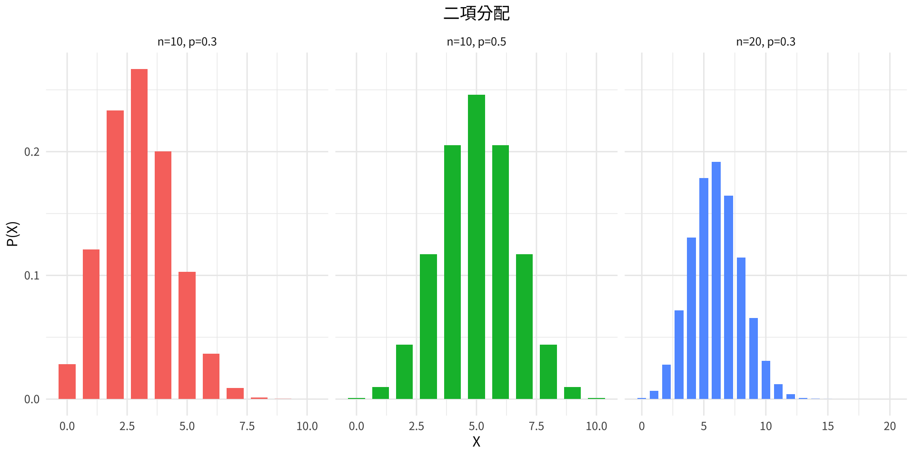

統計學
第5章：離散機率分配
實踐大學
2026-06-04
第5章：離散機率分配
本章涵蓋各節：
- 5-1 機率分配
- 5-2 平均數、變異數、標準差與期望值
- 5-3 二項分配
- 5-4 其他類型的分配 （選修）
學習目標：
- 建構並解讀離散機率分配
- 計算離散變數的平均數、變異數與期望值
- 應用二項機率公式並辨識二項實驗
- 使用多項、卜瓦松及超幾何分配
第5-1節：機率分配
隨機變數
關鍵定義
隨機變數是一種其值由機率實驗結果決定的變數。
離散隨機變數具有有限或可數個可能值。
連續隨機變數可以取數線上某區間內的任意值。
離散隨機變數的例子：
- 拋3枚硬幣的正面數：0、1、2、3
- 家庭中的小孩人數：0、1、2、3、…
- 一批產品中的瑕疵數
連續隨機變數的例子：
- 身高、體重、溫度、時間
離散機率分配
定義
離散機率分配包含離散隨機變數所有可能的值，以及其對應的機率。
有效機率分配的兩個條件：
- 所有機率之和必須等於 1：\sum P(X) = 1
- 每個機率必須介於 0 與 1 之間：0 \leq P(X) \leq 1
機率分配可以用表格、公式或圖形呈現。
例題 5-1：擲骰子
問題
建構擲一顆公正骰子各點數結果的機率分配。
| X | P(X) |
|---|---|
| 1 | 0.1667 |
| 2 | 0.1667 |
| 3 | 0.1667 |
| 4 | 0.1667 |
| 5 | 0.1667 |
| 6 | 0.1667 |
每個點數出現的機率相等，均為 \frac{1}{6} \approx 0.167。注意 \sum P(X) = 1。
例題 5-2：拋擲三枚硬幣
問題
表示拋擲 3 枚公正硬幣時正面數的機率分配，並畫出圖形。

例題 5-3：棒球世界大賽
問題
下列資料顯示 40 屆世界大賽的比賽場次。建構機率分配並畫出圖形。
| 比賽場次 | 4 | 5 | 6 | 7 |
|---|---|---|---|---|
| 頻率 | 8 | 7 | 9 | 16 |

例題 5-4：判斷有效分配
問題
判斷以下各項是否為有效的機率分配。
(a) 總和 = 1 | 全部介於[0,1]: TRUE → 有效 (b) 總和 = 0.9167 → 無效 (c) 總和 = 1 → 有效 (d) 有負機率: TRUE → 無效Important
只有當兩個條件同時成立時，分配才有效：\sum P(X) = 1 且每個值均滿足 0 \leq P(X) \leq 1。
第5-2節：平均數、變異數、標準差與期望值
平均數、變異數與標準差的公式
公式
平均數（期望值）： \mu = E(X) = \sum X \cdot P(X)
變異數： \sigma^2 = \sum \left[X^2 \cdot P(X)\right] - \mu^2
標準差： \sigma = \sqrt{\sigma^2}
平均數描述實驗的長期平均結果。變異數與標準差則衡量分配圍繞平均數的分散程度。
例題 5-5：擲骰子
問題
求擲一顆公正骰子時，出現點數的平均數。
反覆擲一顆公正骰子，長期平均結果趨近於 3.5。
例題 5-6：兩個孩子家庭的女孩數
問題
在有兩個孩子的家庭中，求女孩平均數。
平均而言，有兩個孩子的家庭將有 1 個女孩。
例題 5-7：拋擲三枚硬幣
問題
拋擲 3 枚硬幣時，求正面數的平均數。
多次拋擲 3 枚硬幣，正面數的平均值為 1.5。
例題 5-8：隔夜旅行次數
問題
下列機率分配顯示美國成年人每年進行五晚以上旅行的次數。求平均數。
| X | 0 | 1 | 2 | 3 | 4 |
|---|---|---|---|---|---|
| P(X) | 0.08 | 0.60 | 0.25 | 0.04 | 0.03 |
| X | P(X) | X·P(X) |
|---|---|---|
| 0 | 0.08 | 0.00 |
| 1 | 0.60 | 0.60 |
| 2 | 0.25 | 0.50 |
| 3 | 0.04 | 0.12 |
| 4 | 0.03 | 0.12 |
平均數 μ = 1.34 次/年美國成年人每年進行 5 晚以上旅行的平均次數約為 1.34 次。
例題 5-9：變異數——擲骰子
問題
求擲一顆公正骰子的機率分配之變異數與標準差（例題 5-5）。
| X | P(X) | X²·P(X) |
|---|---|---|
| 1 | 0.1666667 | 0.1666667 |
| 2 | 0.1666667 | 0.6666667 |
| 3 | 0.1666667 | 1.5000000 |
| 4 | 0.1666667 | 2.6666667 |
| 5 | 0.1666667 | 4.1666667 |
| 6 | 0.1666667 | 6.0000000 |
μ = 3.5
σ² = Σ[X²·P(X)] - μ² = 15.1667 - 12.25 = 2.9167
σ = 1.71例題 5-10：選取編號球
問題
袋中有 5 顆球，編號分別為 3、3、4、5、5。隨機選取一顆。求平均數、變異數與標準差。
| X | P(X) | X·P(X) | X²·P(X) |
|---|---|---|---|
| 3 | 0.4 | 1.2 | 3.6 |
| 4 | 0.2 | 0.8 | 3.2 |
| 5 | 0.4 | 2.0 | 10.0 |
μ = 4 | σ² = 0.8 | σ = 0.8944例題 5-11：廣播叩應電話線
問題
下列機率分配顯示廣播叩應節目等候接線的呼叫者數。求平均數、變異數與標準差。
| X | 0 | 1 | 2 | 3 | 4 |
|---|---|---|---|---|---|
| P(X) | 0.1 | 0.3 | 0.3 | 0.2 | 0.1 |
| X | P(X) | X·P(X) | X²·P(X) |
|---|---|---|---|
| 0 | 0.1 | 0.0 | 0.0 |
| 1 | 0.3 | 0.3 | 0.3 |
| 2 | 0.3 | 0.6 | 1.2 |
| 3 | 0.2 | 0.6 | 1.8 |
| 4 | 0.1 | 0.4 | 1.6 |
μ = 1.9 | σ² = 1.29 | σ = 1.1358期望值
期望值
離散隨機變數的期望值 E(X) 等於其平均數： E(X) = \mu = \sum X \cdot P(X)
期望值用於評估賭博、投資及保險中的長期平均獲利或損失。
注意
若 E(X) < 0，表示玩家或投資人長期預期將有淨損失。
例題 5-12：抽獎彩券
問題
某抽獎活動提供一個 $1000 的獎項、兩個 $500 的獎項及五個 $100 的獎項。共售出 1000 張彩券，每張 $1。求一張彩券的期望值。
| 淨獲利 X | P(X) | X·P(X) |
|---|---|---|
| 999 | 0.001 | 0.999 |
| 499 | 0.002 | 0.998 |
| 99 | 0.005 | 0.495 |
| -1 | 0.992 | -0.992 |
E(X) = $ 1.5期望值為負值，表示平均每張彩券玩家預期損失約 $0.35。
例題 5-13：特殊骰子
問題
某特殊骰子的六個面標示為 1、4、4、6、6、6。求擲此骰子的期望值。
例題 5-14：債券投資
問題
投資人考慮兩種債券。債券X：70% 機率獲利 $120，30% 機率損失 $40。債券Y：60% 機率獲利 $90，40% 機率損失 $30。哪種債券的期望報酬較好？
E(債券X) = $ 72 E(債券Y) = $ 42 較佳投資： 債券X債券X 有較高的期望報酬（$72 對 $42）。
第5-3節：二項分配
二項實驗
定義
二項實驗須滿足以下四個條件：
- 試驗次數 n 固定。
- 每次試驗只有兩種可能結果：成功或失敗。
- 每次試驗的結果相互獨立。
- 每次試驗的成功機率 p 保持不變。
例子： 拋硬幣 n 次；對 n 人進行是/否問卷調查；有放回地測試 n 個零件。
二項分配的符號
符號說明
| 符號 | 意義 |
|---|---|
| P(S) | 成功的機率 |
| P(F) | 失敗的機率 |
| p | 成功的數值機率 |
| q = 1 - p | 失敗的數值機率 |
| n | 試驗次數 |
| X | n 次試驗中成功的次數 |
注意：0 \leq X \leq n，且 X = 0, 1, 2, \ldots, n
二項機率公式
公式
在二項實驗中，n 次試驗中恰好 X 次成功的機率為：
P(X) = \frac{n!}{(n-X)!\,X!} \cdot p^X \cdot q^{n-X}
其中 q = 1 - p。
- \dfrac{n!}{(n-X)!\,X!} = {}_nC_X 計算 n 次試驗中排列 X 次成功的方式數
- p^X 是 X 次成功的機率
- q^{n-X} 是 n - X 次失敗的機率
例題 5-15：拋硬幣
問題
拋一枚硬幣 3 次。求恰好出現 2 次正面的機率。
n = 3 , X = 2 , p = 0.5 , q = 0.5 P(2次正面) = C(3,2) × (0.5)² × (0.5)¹ = 3 × 0.25 × 0.5 = 0.375
以 dbinom 驗證: 0.375Important
此拋硬幣問題滿足所有 4 個二項條件：固定 n=3 次試驗、兩種結果（正/反），獨立拋擲，常數 p=0.5。
例題 5-16：看診調查
問題
調查發現每 5 名美國人中有 1 名在任一特定月份曾看醫生。若隨機抽取 10 人，求恰好有 3 人上個月看過醫生的機率。
n = 10 , X = 3 , p = 0.2 , q = 0.8 P(3) = C(10,3) × (1/5)³ × (4/5)⁷ = 0.201
dbinom 驗證: 0.201例題 5-17：兼職就業調查
問題
調查發現 30% 的青少年消費者從兼職工作獲得零用錢。若隨機抽取 5 名青少年，求至少 3 名有兼職工作的機率。
P(3) = 0.132 P(4) = 0.028 P(5) = 0.002 P(至少3人) = P(3)+P(4)+P(5) = 0.163
驗證：1 - P(X ≤ 2) = 0.163例題 5-18：使用二項表
問題
使用二項機率表（表B）或 R 求解例題 5-15（3 枚硬幣，P(恰好2次正面)）。
例題 5-19：夜晚獨自在家的恐懼
問題
調查顯示 5% 的美國人害怕夜晚獨自在家。若隨機抽取 20 名美國人，求以下機率：
恰好 5 人感到害怕
最多 3 人感到害怕
至少 3 人感到害怕
(a) P(X = 5) = 0.0022 (b) P(X ≤ 3) = P(0)+P(1)+P(2)+P(3) = 0.9841 (c) P(X ≥ 3) = 1 - P(X ≤ 2) = 0.0755例題 5-20：酒後駕車
問題
報告指出週末夜間單車輛交通死亡事故中，70% 涉及酒醉駕駛。若隨機抽取 15 件此類死亡事故，求恰好 12 件涉及酒醉駕駛的機率。
二項分配的平均數、變異數與標準差
二項分配的簡化公式
\mu = n \cdot p
\sigma^2 = n \cdot p \cdot q
\sigma = \sqrt{n \cdot p \cdot q}
這些公式在代數上等同於一般公式 \mu = \sum X \cdot P(X) 與 \sigma^2 = \sum[X^2 \cdot P(X)] - \mu^2。
例題 5-21：拋硬幣四次
問題
拋一枚硬幣 4 次。求正面數的平均數、變異數與標準差。
μ = n·p = 4 × 0.5 = 2 σ² = n·p·q = 4 × 0.5 × 0.5 = 1 σ = √σ² = √ 1 = 1
驗證：μ = 2 | σ² = 1例題 5-22：擲骰子 480 次
問題
擲一顆骰子 480 次。求出現 3 點的平均數、變異數與標準差。
n = 480 , p = 1/6, q = 5/6μ = n·p = 80 σ² = n·p·q = 66.67 σ = √σ² = 8.16擲骰子 480 次，預期約出現 80 次 3 點，標準差約為 8.16。
例題 5-23：雙胞胎的可能性
問題
約 2% 的美國新生兒為雙胞胎。若隨機抽取 8000 名新生兒，求雙胞胎出生數的平均數、變異數與標準差。
μ = n·p = 160 名σ² = n·p·q = 156.8 σ = √σ² = 12.5Important
在 8000 名新生兒樣本中，平均預期有 160 對雙胞胎出生，σ ≈ 12.5。
二項分配：視覺化

第5-4節：其他類型的分配（選修）
其他離散分配概覽
當二項模型不適用時，可使用其他離散分配：
| 分配 | 使用時機 |
|---|---|
| 多項分配 | 每次試驗有兩種以上的結果 |
| 卜瓦松分配 | 時間/面積/體積上的事件；n 大、p 小 |
| 超幾何分配 | 不放回抽樣 |
多項分配
公式
若實驗有 k 種可能結果 E_1, E_2, \ldots, E_k，其機率分別為 p_1, p_2, \ldots, p_k，且 X_i 為 n 次獨立試驗中結果 E_i 發生的次數，則：
P(X) = \frac{n!}{X_1!\, X_2!\, X_3!\, \cdots\, X_k!} \cdot p_1^{X_1} \cdot p_2^{X_2} \cdots p_k^{X_k}
其中 X_1 + X_2 + \cdots + X_k = n 且 p_1 + p_2 + \cdots + p_k = 1。
多項分配是二項分配的推廣——二項分配是 k = 2 的特殊情形。
例題 5-24：休閒活動
問題
在某大城市，50% 的居民選擇看電影，30% 選擇晚餐加看戲，20% 選擇購物作為休閒活動。若隨機抽取 5 人，求 3 人計劃看電影、1 人看戲、1 人逛購物中心的機率。
P(X) = 5!/(3!·1!·1!) × (0.50)³ × (0.30)¹ × (0.20)¹ = 20 × 0.125 × 0.3 × 0.2 = 0.15例題 5-25：咖啡廳顧客
問題
咖啡廳經理發現顧客購買 0、1、2 或 3 杯咖啡的機率分別為 0.3、0.5、0.15 及 0.05。若有 8 名顧客進入，求 2 人什麼都不買、4 人買 1 杯、1 人買 2 杯、1 人買 3 杯的機率。
n = 8 X₁=2（0杯），X₂=4（1杯），X₃=1（2杯），X₄=1（3杯）P(X) = 0.0354例題 5-26：選取彩色球
問題
箱中有 4 顆白球、3 顆紅球、3 顆藍球。選取一顆球，記錄顏色後放回。若選取 5 顆球，求 2 顆白球、2 顆紅球、1 顆藍球的機率。
p₁ = 4/10（白球），p₂ = 3/10（紅球），p₃ = 3/10（藍球）P(X) = 5!/(2!·2!·1!) × (4/10)² × (3/10)² × (3/10)¹ = 0.1296 （= 81/625）卜瓦松分配
定義與公式
卜瓦松分配適用於事件在連續時間、面積或體積區間內隨機發生的情況——尤其當 n 大且 p 小時。
P(X;\, \lambda) = \frac{e^{-\lambda}\, \lambda^X}{X!}, \quad X = 0, 1, 2, \ldots
- \lambda（lambda）= 每單位區間的平均發生次數
- e \approx 2.71828（歐拉數）
- X = 區間內的發生次數
當 \lambda = n \cdot p < 5 時，也可用於近似二項分配。
例題 5-27：打字錯誤
問題
一份 500 頁的手稿含有 200 個隨機分布的打字錯誤。求某頁恰好有 3 個錯誤的機率。
λ = 200/500 = 0.4 個錯誤/頁P(X=3; λ=0.4) = e^(-0.4) × (0.4)³ / 3! = 0.67032 × 0.064 / 6
= 0.0072
以 dpois 驗證: 0.0072例題 5-28：免費電話叩應
問題
某銷售公司的免費電話平均每小時接到 3 通電話。求任意一小時內的以下機率：
最多 3 通電話
至少 3 通電話
5 通以上電話
(a) P(X ≤ 3) = P(0)+P(1)+P(2)+P(3) = 0.6472 (b) P(X ≥ 3) = 1 - P(X ≤ 2) = 0.5768 (c) P(X ≥ 5) = 1 - P(X ≤ 4) = 0.1847例題 5-29：卜瓦松近似二項
問題
房間內約 2% 的人是左撇子，共有 200 人。使用卜瓦松近似求恰好 5 人是左撇子的機率。
λ = n·p = 200 × 0.02 = 4 卜瓦松近似：P(X=5; λ=4) = 0.1563 精確二項：P(X=5) = 0.1579 差異： 0.0016Important
當 \lambda = n \cdot p < 5 時，卜瓦松近似是可靠的。
超幾何分配
定義與公式
超幾何分配適用於從含有兩種類型物件的有限母體中不放回抽樣的情況。
給定一個母體含 a 個第一類物件與 b 個第二類物件（共 a + b 個），從中抽取大小為 n 的樣本，恰好選到 X 個第一類物件的機率為：
P(X) = \frac{C^a_X \cdot C^b_{n-X}}{C^{a+b}_n}
與二項的主要差異： 試驗是相依的（不放回）。
例題 5-30：助理經理應聘者
問題
10 人應聘餐廳助理經理職位：5 人是大學畢業生，5 人不是。若經理隨機抽取 3 人，求 3 人都是大學畢業生的機率。
a = 5 （畢業生），b = 5 （非畢業生），n = 3 , X = 3 P(X) = C(5,3)×C(5,0) / C(10,3) = 10 × 1 / 120 = 0.0833 （= 1/12）例題 5-31：房屋保險
問題
研究發現某社區 10 棟房屋中有 2 棟沒有保險。若從 10 棟中抽取 5 棟，求恰好 1 棟未投保的機率。
a = 2（未投保），b = 8（已投保），n = 5，X = 1P(X=1) = C(2,1)×C(8,4) / C(10,5) = 2 × 70 / 252 = 0.5556 （= 5/9）例題 5-32：瑕疵壓縮機槽
問題
一批 12 個壓縮機槽中有 3 個瑕疵品。若隨機抽取 3 個進行檢驗，當發現 1 個或以上瑕疵品時即拒絕該批次，求該批次被拒絕的機率。
a = 3（瑕疵品），b = 9（良品），n = 3P(X=0) = C(3,0)×C(9,3) / C(12,3) = 1 × 84 / 220 = 0.3818 P(至少1個瑕疵品) = 1 - P(0) = 1 - 0.3818 = 0.6182當 12 個槽中有 3 個瑕疵品時，抽取 3 個後該批次被拒絕的機率為 62%。
離散分配摘要
| 分配 | 公式 | 使用時機 |
|---|---|---|
| 二項分配 | P(X) = C^n_X·p^x·q^{n-x} | 固定n次試驗；2種結果；獨立；常數p |
| 多項分配 | P(X) = n!/(X_1!·X_2!···X_k!)·p_1^{X_1}···p_k^{X_k} | 固定n次試驗；超過2種結果；結果相互獨立 |
| 卜瓦松分配 | P(X;λ) = e^{-λ}·λ^X/X! | n大、p小；時間/面積/體積上的事件 |
| 超幾何分配 | P(X) = C^a_X·C^b_{n-X}/C^{a+b}_n | 兩種結果；不放回抽樣 |
第5章摘要
重點整理
- 離散機率分配列出所有可能值及其機率；需滿足 \sum P(X)=1 且 0 \leq P(X) \leq 1。
- 平均數： \mu = \sum X \cdot P(X)；變異數： \sigma^2 = \sum[X^2 \cdot P(X)] - \mu^2
- 期望值 E(X) = \mu——長期平均結果。
- 二項分配： n 次固定試驗、2 種結果、獨立、常數 p。
- P(X) = C(n,X) \cdot p^X \cdot q^{n-X}；\mu = np；\sigma = \sqrt{npq}
- 多項分配： 二項分配在 k > 2 種結果時的推廣。
- 卜瓦松分配： 時間/面積上的事件；P(X;\lambda) = e^{-\lambda}\lambda^X / X!
- 超幾何分配： 兩種結果，不放回抽樣。
版權聲明
版權聲明。 本教學素材改編自 Bluman, A. G. (2011). Elementary statistics: A step by step approach (8th ed.). McGraw-Hill。所有版權由原作者與出版商保留。
僅限非商業使用。 本素材嚴格限於教育目的，不得用於商業獲利。
正確引用。 任何複製、散布或使用本素材者，必須對原始來源提供適當引用。

Elementary Statistics: A Step by Step Approach